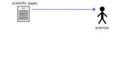
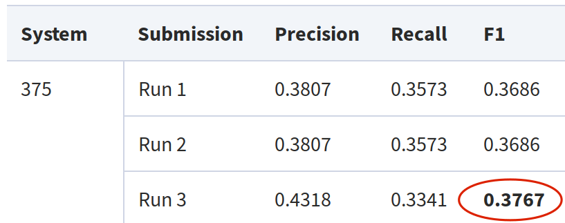
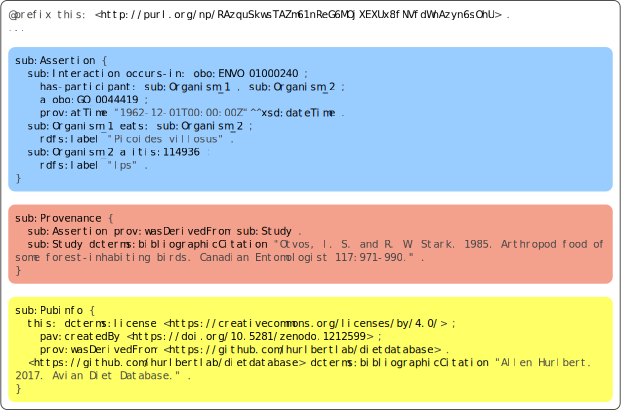
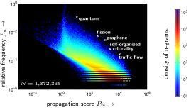

Next-Generation Global Knowledge Communication
UHD Interview of Tobias Kuhn
VU Amsterdam, 7 April 2020
These slides: https://tinyurl.com/tkuhn-uhd
Global Knowledge Communication Crisis
Global Knowledge Communication Crisis

Global Knowledge Communication Crisis
Automatic Text Mining is Not Good Enough
BioCreative VI Challenge and Workshop 2017, Task 4 on mining protein–protein interactions:

Manual Text Mining is Slow and Expensive
Around 50 biocurators employed just to feed a few European protein databases:
"Text mining? ... Why bury it first and then mine it again?" (Barend Mons)

My Research on Next-Generation Global Knowledge Communication
 Principles: FAIR and beyond
Principles: FAIR and beyond
Techniques: Nanopublications
User Interface: Controlled Natural Language
 Content: Memes, Bias, Controversy
Content: Memes, Bias, Controversy
|
|
|
Research Highlights:
FAIR and beyond
Making knowledge findable, accessible, interoperable, and reusable:
- Contribution to the FAIR Guiding Principles
- Beyond FAIR: Genuine Semantic Publishing
- Applying FAIR to workflows and protocols

- Adoption by major funders and publishers
- Cited 2420 times since 2016
- Increased interest in nanopublications
Mark Wilkinson, Michel Dumontier, ..., Tobias Kuhn, ..., Barend Mons. The FAIR Guiding Principles for scientific data management and stewardship. Scientific Data, 3:16001, 2016.
FAIR is Very Ambitious
- I1: (meta)data use a formal, accessible, shared, and broadly applicable language for knowledge representation.
- We are required to publish FAIR data, but the technology isn't ready yet...
- FAIR is aspirational!
Not just FAIR Data, but FAIR Findings:
Genuine Semantic Publishing

Tobias Kuhn and Michel Dumontier. Genuine semantic publishing. Data Science, 1(1-2), 2017.
|
|
Research Highlights:
Nanopublications
Scholarly communication methods for the digital age:
- Broadening the Scope of Nanopublications
- Trusty URIs
- Reliable Publishing with Nanopublications
- Reproducible and Evolving Datasets
- Uniform Cross-Dataset Interoperability
- Semantic Microblogging
Background: Nanopublications

Nanopublication: Simplified Example
Nanopublication: Real Example
http://purl.org/np/RAzquSkwsTAZm61nReG6MOjXEXUx8fNVfdWnAzyn6sOhU
Trusty URIs: Make Nanopublications ...

Tobias Kuhn and Michel Dumontier. Trusty URIs: Verifiable, Immutable, and Permanent Digital Artifacts for Linked Data. ESWC 2014. Best research paper award.
Decentralized Server Network with >10M Nanopublications is Fast and Reliable


Tobias Kuhn, Christine Chichester, Michael Krauthammer, Núria Queralt-Rosinach, Ruben Verborgh, George Giannakopoulos, Axel Ngonga, Raffaele Viglianti, Michel Dumontier. Decentralized provenance-aware publishing with nanopublications. PeerJ Computer Science, 2:e78, 2016.
Nanopublication Overhead Disappears and Turns Into Advantage for Evolving Datasets

Tobias Kuhn, Egon Willighagen, Chris Evelo, Núria Queralt-Rosinach, Emilio Centeno, Laura I. Furlong. Reliable Granular References to Changing Linked Data. In Proceedings of ISWC 2017. Springer, 2017.
Nanopublications Enable Global Data Integrity and Interoperability
Reliable and uniform cross-dataset processing,
for example to analyze vocabulary use or type distribution:


Tobias Kuhn, Albert Meroño, Alexander Malic, Jorrit Poelen, Allen Hurlbert, et al. Nanopublications: A Growing Resource of Provenance-Centric Scientific Linked Data. In Proceedings of IEEE eScience 2018.
|
|
Research Highlights:
Controlled Natural Language (CNL)
Intuitive languages to communicate complex issues:
- Survey of 100 CNLs
- Attempto Controlled English (ACE)
- AIDA
Communicating with People and Machines...
Communicating with People and Machines...
PENS Classification Scheme for
Controlled Natural Languages
- Precision: from very imprecise (P1, e.g. English) to maximally precise (P5, e.g. propositional logic)
- Expressiveness: from very inexpressive (E1, e.g. prop. logic) to maximally expressive (E5, e.g. English)
- Naturalness: from very unnatural (N1, e.g. prop. logic) to fully natural (N5, e.g. English)
- Simplicity: from extremely complex (S1, e.g. English) to very simple (S5, e.g. prop. logic)
Tobias Kuhn. A Survey and Classification of Controlled Natural Languages. Computational Linguistics 40(1). 2014.
Applying PENS: CNLs Occupy the Space between Natural and Formal Languages
Tobias Kuhn. A Survey and Classification of Controlled Natural Languages. Computational Linguistics 40(1). 2014.
Are CNLs Really Easier to Understand?
Testing the understandability of logic languages:
Tobias Kuhn. An evaluation framework for controlled natural languages. CNL 2010.
CNLs are Easier and Faster to Understand
objective understandability (score on task):subjective understandability (questionnaire):

needed time (in seconds):
Kuhn. The Understandability of OWL Statements in Controlled English. Semantic Web 4(1). 2013. / Kuhn, Bergel. Verifiable source code documentation in CNL. Science of Computer Progr. 96. 2014.
Writing in CNL: Predictive Editor
Tobias Kuhn. A Principled Approach to Grammars for Controlled Natural Languages and Predictive Editors. Journal of Logic, Language and Information 22(1). 2013.
CNLs are Easier and Faster to Write
objective understandability (score on task):subjective understandability (questionnaire):
needed time (in seconds):

Tobias Kuhn and Stefan Höfler. Coral: Corpus Access in Controlled Language. Corpora 7(2). 2012.
|
Research Highlights:
Memes, Controversy, and Bias
Analyzing the forces that shape communication:
- Spreading of scientific concepts (memes)
- Bias in International Video News
- Modeling Controversy
Scientific Memes as Network Patterns
Definition derived from Dawkins' definition of "meme":
A scientific meme is a short unit of text in a publication that is replicated in citing publications and thereby distributed around in many copies.
Quantifying a meme's alignment with the citation graph:

Tobias Kuhn, Matjaz Perc, and Dirk Helbing. Inheritance patterns in citation networks reveal scientific memes. Physical Review X 4. 2014
Scientific Memes' Characteristic Signature
Meme Score:
Tobias Kuhn, Matjaz Perc, and Dirk Helbing. Inheritance patterns in citation networks reveal scientific memes. Physical Review X 4. 2014Meme Score is Better than Alternatives
Tobias Kuhn, Matjaz Perc, and Dirk Helbing. Inheritance patterns in citation networks reveal scientific memes. Physical Review X 4. 2014Gender Bias in International Video News:
Bias who is Shown < who Speaks < who is Spoken about
With Alessandro Bozzon, Antoaneta Dimitrova, Alec Badenoch, Johan Oomen, Jesse de Vos, Honorata Mazepus, Markus de Jong, Panagiotis Mavridis, Xander Wilcke, and Lora Aroyo. https://capturebias.wordpress.com
Research Summary
- 4305 citations (h-index: 23)
- 54 scientific articles (32 as first author)
- 18 journal articles
- 13 papers at competitive international conferences
- 23 papers at smaller conferences and workshops
- Two best paper awards at large conferences (plus two at workshops)
International Experience
Academic appointments / extended visits at 9 institutes in 7 countries:
- Assistant professor at VU Amsterdam
- Postdoc at ETH Zurich
- Guest researcher at Stanford University
- Short research appointment at University of Geneva
- Postdoc at Yale University
- Lecturer and researcher at University of Malta
- Guest researcher at University of Chile
- Guest researcher at Technical University Dresden
- PhD student and postdoc at University of Zurich
Acquired Research Grants
- COST Action: Distributed Knowledge Graphs (co-applicant), € 520 000
- NWO JEDS: FAIR Workflows (co-PI), € 437 000
- VU Innovatie AIO: Linkflows (PI), € 200 000 *
- SNF R'Equip: High-Performance Computing Equipment for Sophisticated Agent Simulations and Big Data Analytics (main proposal writer) CHF 472 000 *
- EC FP7: Multilingual On-Line Translation — Enlarged (co-writer), € 600 000
- University of Zurich: PhD grant (PI), CHF 133 591
* includes matching
Recent Personal Research Grant Proposals (unsuccessful)
NWO (A+/A/B/UF/U scale):
- Vidi 2016: A+, A+, A
- Top Grant (module 2) 2017: A, A
- Vidi 2017: A+, A, A
- Top Grant (module 2) 2018: A+, A, UF
ERC Starting Grant 2016: Very Good (5), Excellent (6), Outstanding (1)
Unsuccessful H2020 Grant Proposals
- EINFRA-9-2015: PharmaVRE. Score: 13.0/15.0
- EINFRA-22-2016: NANO. Score: 12.5/15.0
- ICT29-2018: DACORA. Score: 12.5/15.0 (on reserve list)
Education Highlights
- Knowledge and Media, complete redesign of MSc course, VU, since 2015, 5 times
- Information Retrieval, existing BSc course with continuous updates, VU, since 2015, 5 times
- Modelling and Simulating Social Systems with Matlab, existing BSc/MSc course with continuous updates, ETH Zurich, 2013-20114, 3 times
- Logic, Representation and Inference, MSc course designed from scratch, University of Malta, 2011, twice
- MSc/BSc thesis supervisor of 34 students
Master course Knowledge and Media
- Complete Redesign of Content and Structure
- Assessment: Flash Presentations, Posters, Overview and Focus Papers
- Good student evaluations
Bachelor Course Information Retrieval
- Based on Classic Textbook by Manning et al.
- Assessment: Six IPython Notebook Based Assignments and Multiple-Choice Exam
- Good student evaluations

Management Highlights:
Projects and Group
- Main PI of Capturing Bias Project (NWO VWdata)
- Co-PI of FAIR Workflows Project (NWO JEDS)
- Supervisor of 3 Postdocs and 4 PhD Students
- Independently managed the UCDS group during the transition period in 2018, together with Victor de Boer
Management Highlights:
Department and External
- Master IS Project Coordinator
- Secretary of Exam Commission
- Education Committee Member of BSc/MSc AI
- Editor-in-Chief of Journal Data Science at IOS Press